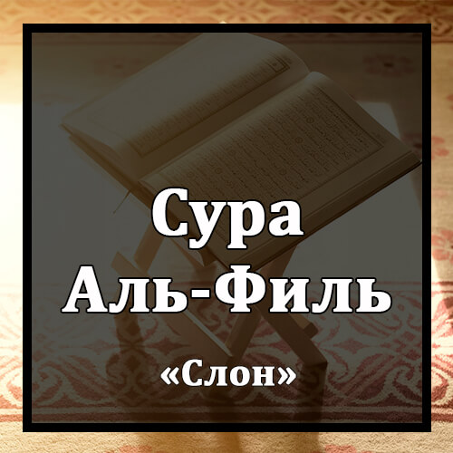

Бисмилляхир-Рахманир-Рахиим
Во имя Аллаха Милостивого и Милосердного!
Алям Тара Кайфа Фа`аля Раббука Би`асхабиль-Фииль.
Разве ты не видел, что сделал твой Господь с владельцами слона?
Алям Йадж`аль Кайдахум Фи Тадлииль.
Разве Он не запутал их козни
Уа Арсаля `Алейхим Тайраан Абабииль.
и не наслал на них птиц стаями?
Тармихим Бихиджаратин Мин Сиджииль.
Они бросали в них каменья из обожженной глины
Фаджа`аляхум Ка`асфин Ма`кууль.
и превратили их в подобие изъеденных иссохших злаковых листьев.